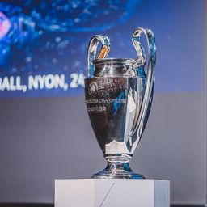

Introdução
UEFA Champions League é uma das competições de clubes mais prestigiadas do mundo, organizada pela UEFA desde 1955. Ao longo dos anos, a competição tem sido palco de momentos memoráveis, protagonizados por alguns dos melhores clubes de futebol da Europa. Desde a temporada de 2009-10, a competição começa com uma fase de grupos com jogos de ida e volta, que é precedida por rodadas de qualificação para equipes que não recebem entrada direta no torneio propriamente dito. As rodadas de qualificações são divididas entre as equipes qualificadas em virtude de serem campeões da liga e as qualificadas do 2º ao 4º no seu campeonato nacional O torneio começa com uma fase de grupos de 32 equipes, divididas em oito grupos. Os grupos são definidos através de sorteio, sendo que equipes do mesmo país não podem cair em grupos iguais. Cada equipe se encontra com os outros em sua casa e fora em um formato de ida e volta. As equipes que ficarem em primeiro e segundo lugar de cada grupo passam para a próxima rodada. A equipe que fica na terceira colocação entra na Liga Europa da UEFA Para este estágio, a equipe vencedora de um grupo joga contra os vice-campeões de outro grupo, e os times da mesma associação podem se enfrentar um contra o outro. A partir das quartas de final, o sorteio é inteiramente aleatório, sem proteção de associação. O torneio usa a regra do gol fora de casa: se a pontuação agregada dos dois jogos estiver empatada, então a equipe que marcou mais golos no estádio do seu oponente avança.
História
Liga dos Campeões da UEFA ou UEFA Champions League é uma competição anual de futebol em nível continental, organizada pela União das Associações Europeias de Futebol (UEFA) e disputada por clubes da Europa. É um dos torneios mais prestigiados do mundo e a competição de clubes mais prestigiada no futebol europeu, é disputada pelas equipes mais bem classificadas nas respectivas ligas nacionais na temporada anterior, sendo o número de vagas atribuído consoante o coeficiente da UEFA. A final da Liga dos Campeões da UEFA é o evento esportivo anual mais visto em todo o mundo. A final da edição de 2012-13 teve o maior número de audiências até o momento, atraindo 360 milhões de telespectadores. Introduzida em 1955 como Coupe des Clubs Champions Européens (em francês para Taça dos Clubes Campeões) ou Copa dos Clubes Campeões Europeus foi inicialmente um torneio eliminatório apenas aos campeões das ligas nacionais da Europa, com o seu vencedor considerado como o campeão europeu de clubes. A competição assumiu o nome atual em 1992 acrescentando uma fase de grupos todos contra todos em 1991 e permitindo vários participantes de determinados países desde 1997 Desde então, foi expandido e, embora a maioria das ligas nacionais da Europa ainda só possa inscrever o seu campeão, as ligas mais fortes agora oferecem até quatro equipes. Os clubes em seguida das ligas nacionais que não se qualificam para a Liga dos Campeões, são elegíveis para a competição da Liga Europa da UEFA a segunda divisão, e desde 2021 para a Liga Conferência Europa da UEFA a terceira divisão. No seu formato atual, a Liga dos Campeões começa em meados de julho com uma rodada preliminar e quatro rodadas pré-eliminatórias. As dez equipes sobreviventes entram na fase de grupos, juntando com outras 22 equipes previamente qualificadas. As 32 equipes são colocadas em oito grupos de quatro equipes e jogam em um sistema ida e volta. As oito vencedoras dos grupos e as oito segundos classificadas avançam para a fase eliminatória, que culmina com a partida final em maio ou início de junho. O vencedor da Liga dos Campeões se qualifica para a Liga dos Campeões da temporada seguinte, bem como para a Supercopa da UEFA e para os torneios da FIFA, a Copa Intercontinental e o Mundial de Clubes.
Últimos Vencedores
| Ano | Clube |
|---|
Curiosidades
A competição tem inúmeras curiosidades, desde hat-tricks memoráveis até viradas históricas. Os clubes espanhóis acumulam o maior número de vitórias ,(19 vitórias), seguido da Inglaterra (15 vitórias) e Itália (12 vitórias). A Inglaterra tem o maior número de times vencedores, com seis clubes conquistando o título. A competição foi vencida por 23 clubes, 13 dos quais venceram mais de uma vez e oito defenderam o título com sucesso. O Real Madrid é o clube com mais títulos da história da competição, tendo ganho o torneio 15 vezes, incluindo as primeiras cinco temporadas. Apenas um clube venceu todas as suas partidas em um único torneio a caminho da vitória no torneio, o Bayern de Munique na temporada 2019-20. O Real Madrid é o atual campeão europeu, tendo derrotado o Borussia Dortmund por 2 a 0 na final de 2024 para conquistar seu décimo quinto título, sendo o primeiro de forma invicta do clube em uma competição como essa claramente que não falta emoções, tivemos algumas viradas históricas como na temporada 2016-17, o Paris-saint-germain ganhou por 3-0 o Fc Barcelona e o Fc Barcelona em espanha conseguiu virar o placar ganhando por 4-0 e classificando-se para a fase seguinte na champions League de 2018/19 pelas oitavas de final, onde o PSG aplicou 2-0 no Manchester United em pleno Old Trafford, e decidiria a classificação em casa. Pra piorar a situação dos Red Devils, eram 10 os desfalques da equipe inglesa para o jogo de volta. Mas mesmo desfigurado, o United fez 3-1 e avançou para as quartas de final. temos os melhores marcadores da competição também, onde Cristiano Ronaldo ocupa a primeira posição com 141 golos, em seguida vem o Lionel Messi com 129 golos e em terceiro lugar aparece o Robert Lewandowski com 94 golos.
Imagens
 Taça da Uefa Champions League
Todos os campeões e vices da UCL
Feedback
Deixe seu feedback sobre nosso site: